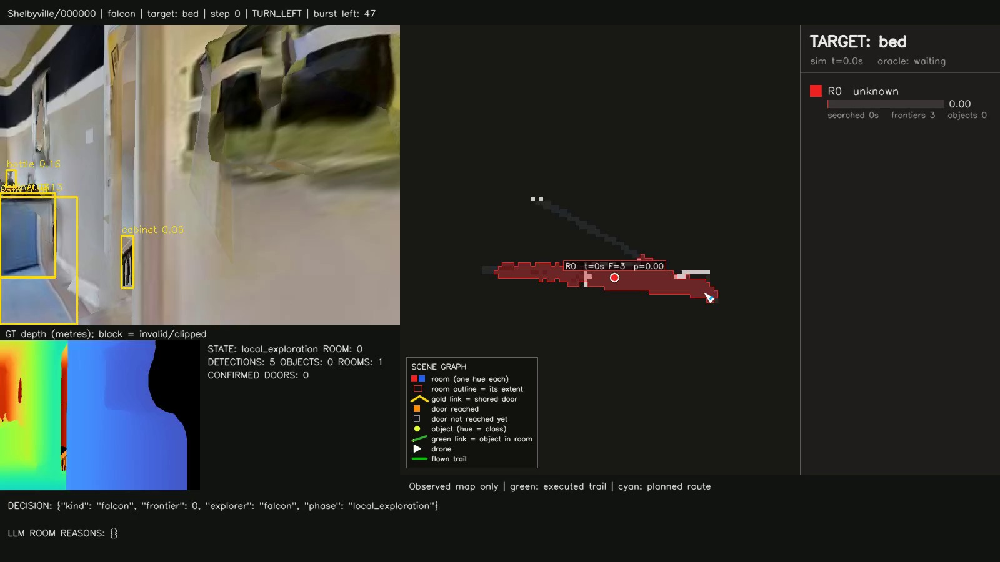
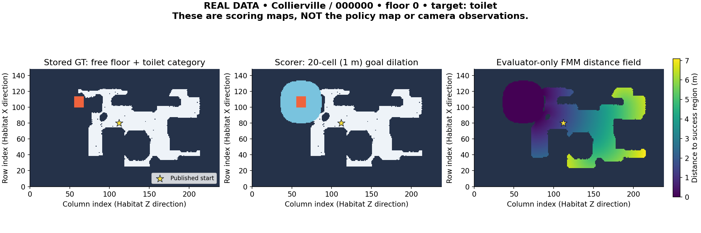

ZSON, end to end
What our agent sees, how it decides where to search, what each planner does, how Gibson judges the outcome, and where the current implementation fails.
No raw codeReal GT examplesBoth implemented policiesGibson-only resultsAudited checkout: feat/objnav-habitat-gibson-nadav, commit f18cc5a4. Python-source fingerprint 6ddb9daf… matches the saved 15-building campaign. This guide is not a new benchmark run.
What is “our algorithm”?
The active method is a training-free, metric, hierarchical object-search system. It builds an observed map from RGB-D and perfect simulator pose, detects objects, infers rooms, uses a language model to judge room relevance, and uses RPT* to order room visits. A local explorer and geometric path follower turn those decisions into discrete simulator actions.
ZSON means zero-shot object navigation: given a target category, such as toilet, search an unfamiliar environment without navigation-specific training for this task. It does not mean that the detector or LLM was never trained, that the target category was unseen in pretraining, or that the implemented evaluator supports arbitrary language. The papers also mention an earlier method literally named ZSON; that named baseline is not this implementation.
Default: frontier
Recorded name: sparx-rpt-llm-host-sweep. Periodic room reasoning, a SELECT → TRANSIT → SEARCH room supervisor, RPT room ordering, largest-frontier-cluster selection inside a room, and weighted-cost A* routes.
Optional: bounded FALCON
Recorded name: sparx-rpt-llm-falcon-planar. Bounded local coverage exploration → room reasoning → RPT selection → A* transit → another local burst, with target-verification and recovery interrupts.
The FALCON variant changes local exploration, reasoning cadence, region budgets and the final action-safety layer. A comparison between them measures an integrated hierarchy change, not an isolated frontier-selector ablation. Frontier remains the default because current development evidence favors its reliability.
The essential distinctions
- Gibson is scene data; Habitat-Sim is the simulator. Episodes and a scorer define the benchmark.
- Ideal depth and pose are allowed inputs; hidden semantic goal maps are not. “Observed-only” does not mean “no simulator-derived ground truth.”
- RPT* orders destinations; A* finds geometric paths. RPT* is not the motion-sampling algorithm RRT*.
- Room type, affinity, probability and detector confidence differ. None is automatically calibrated GT.
- Target confirmation, STOP and success differ. Our Gibson scorer judges final position, does not require STOP at the step limit, and does not end the episode at first success-region entry.
Scope and evidence labels
This guide covers the actual ObjectNav benchmark path, mapping/perception/room reasoning, route and local planners, actions, evaluation, recording and tests. It excludes SPHERA control, ROS flight-control chains, autopilots and unrelated deployment infrastructure. Some reusable source comments say “aircraft”; here their abstractions control a kinematic ground agent.
Implemented means traced in the current source. Measured means read from saved records or an explicitly described CPU probe. Proposed/inference means an interpretation or future change, not a feature claimed to run today. Published numbers are attributed to their source paper.
Gibson, Habitat and the simulated robot
Gibson contains reconstructions of real indoor buildings. A textured 3D mesh describes surfaces and their appearance. Habitat-Sim places a virtual agent/camera in that geometry, renders an image from its current viewpoint, and constrains movement with a navigation mesh. The input is rendered from a 3D reconstruction, not a prerecorded movie played to the policy.
| Layer | What it supplies | Important boundary |
|---|---|---|
| Scene .glb | Textured 3D geometry for RGB/depth rendering. | Not a public room-name list or goal lookup. |
| Scene .navmesh | Native navigable surfaces/connectivity. | Used for simulator movement; no unseen oracle route is passed to the policy. |
| Episode archive | Fixed start, orientation, target category and floor reference. | The full private row is not exposed to the agent. |
| Semantic floor archive | GT free-space and category masks. | Generator/evaluator data, not a semantic camera observation. |
| Our adapter/harness | Coordinates, legal actions, budget, scoring and checks. | “Uses Gibson” alone does not establish protocol equivalence. |
The current agent is synchronous, kinematic and upright, with physics disabled. Its nominal radius is 0.18 m. Colocated RGB/depth cameras sit 0.88 m above the base. There are no motor dynamics, acceleration model, battery, grasping, articulated-door interaction or flight controller in this benchmark.
The bridge loads the released navmesh rather than recomputing it. Reset checks that the simulator preserves the published start; difficult starts are not silently snapped to an easier location. Sliding is enabled: a forward attempt may move fully, partly, sideways along an obstacle, or hardly at all. Actual displacement—not requested displacement—determines path length.

Texture seams, incomplete surfaces and ambiguous furniture come from the reconstruction. Ideal depth is accurate relative to that mesh, not necessarily the original real building. Perfect geometric depth does not solve recognition or annotation errors.
Why motion looks jumpy
A 30° discrete turn produces a new view without giving the agent intermediate frames. Saved videos normally play six decisions per second, not measured real time. Optional smooth replay interpolates views after evaluation; those frames never enter the policy or scorer. Smoother video is not better sensing.
The reference SemExp setup used Habitat-Sim 0.1.5; local recorded runs use 0.2.4. The CLI requires acknowledgment of the mismatch. This is an explicitly documented SemExp-derived port, not demonstrated bit-exact OSG Navigator reproduction.
What do we obtain, and what does it look like?
Separate simulator-generated sensor truth, hidden annotations used to judge a task, and the map/labels predicted by our algorithm. They are different data products with different permissions.
| Quantity | Representation | Who may use it? |
|---|---|---|
| RGB | 480 × 640 × 3 RGB byte image. | Policy/detector. A rendered view, not semantic labels. |
| Depth | 480 × 640 float32 metric optical-axis depth, registered to RGB. | Policy mapping/projection. Ideal simulator depth, not a learned depth network. |
| Pose | World x/y/z metres; yaw and camera pitch radians. | Policy. Perfect localization; no SLAM/odometry estimator is being tested. |
| Public task | Target category, camera intrinsics, action specification, episode identity, split, maximum steps. | Policy/harness. Scene identity is bookkeeping, not a goal-memory lookup in this method. |
| GT category/free masks | Binary per-floor channel arrays with a centimetre-valued origin. | Generator/evaluator/authorized visualization only. |
| GT distance and success | Private category-specific FMM field and final trajectory metrics. | Scorer/recorder only; never a room-selection or STOP oracle. |
| Native collision / first success entry | Contact flag and first qualifying action index. | Evaluator diagnostics. Policy blockage is inferred from allowed pose history. |
| Map, objects, rooms, probabilities | Our occupancy grid, landmark points, room masks and semantic scores. | Policy state. Predictions, even when built from perfect depth/pose. |
Depth conventions
Usable depth lies between 0.5 and 5.0 m. Returns at/below the near clip, including zero/hole pixels, become NaN: unusable measurement. At/beyond the far clip they become positive infinity: clipped/no surface within range. Back-projection discards invalid/clipped samples. It must not invent a wall at the far clipping plane. Depth is optical-axis distance, not the full radial length of each viewing ray.
Coordinate conventions
Habitat uses +Y up and local −Z forward. The public right-handed Z-up coordinates are: x = −Habitat Z; y = −Habitat X; z = Habitat Y. Yaw is counterclockwise about public +Z. Public z is the base/floor elevation; camera height is added separately. Positive public camera pitch looks down. The bridge and shared projection helpers perform these conversions once.
Actual private episode: Collierville/000000
Episode metadata
- Target toilet, dataset category index 4, floor reference 0.
- Habitat start ≈ (−0.3095, 0.0267, −3.4835) m.
- WXYZ quaternion ≈ (−0.2202, 0, 0.9755, 0).
- Public start ≈ (3.4835, 0.3095, 0.0267) m.
Read from the installed release. The agent receives sanitized task information and converted observations, not this private row.
Corresponding GT floor
- Actual shape: 16 × 149 × 239, float64 binary values.
- Resolution: 0.05 m/cell.
- Origin: (−911, −431) cm, in Habitat Z/X order.
- Channel 0 is free space; channels 1–6 are the six navigation categories; toilet is channel 5.
- Additional channels do not add legal benchmark goals.
Compressed episode JSON contains a list of task starts, not demonstrations. The archive val_info.pbz2 stores scene → floor → floor height, semantic array and origin. Its legacy pickle is loaded through a restricted NumPy-only unpickler.
A 1 in a category plane marks an annotated category footprint at that grid cell. It is not a confidence, probability, bounding box, room number or unique instance ID. All acceptable instances of one category contribute to the same goal mask: one category is not necessarily one physical object.

The example’s scoring lookup is row 80, column 112. Recomputing from the stored map gives initial distance to the success region ≈ 1.48823 m; the SemExp SPL reference length is ≈ 2.48823 m after adding the 1 m radius. This was a CPU data/scorer inspection, not a new navigation run.
What is not automatically supplied?
No perfect room boundaries/names, detector boxes, semantic camera pixels, instance tracks, language descriptions or open-vocabulary GT reach this policy. The six category planes cannot evaluate an arbitrary new phrase merely because an LLM understands the words.
The implemented interface keeps dataset/simulator/goal fields out of policy inputs and tests known metadata leaks. That is not proof that arbitrary same-process code could never access private state. Perfect depth/pose remain explicit privileged assumptions relative to deployment.
Sources: C04, C06, C07, C08; actual installed SemExp v1.1 data inspected on 15 September 2026.
What does one action mean?
An action is one discrete instruction, not an internal path, a velocity vector, an LLM sentence or a batch of images. The policy proposes a navigation command; the converter emits one legal symbol; Habitat executes it; then the agent decides from the new observation.
| Legal action | Internal ID | Nominal effect | Accounting |
|---|---|---|---|
| MOVE_FORWARD | 1 | Attempt 0.25 m in the current heading; collision/sliding may change actual movement. | One action even if blocked; add measured horizontal distance. |
| TURN_LEFT | 2 | Yaw +30° in place. | One action, normally no path distance. |
| TURN_RIGHT | 3 | Yaw −30° in place. | One action, normally no path distance. |
| STOP | 0 | End the episode and preserve its final view. | One action, no movement; may represent success or failure. |
The shared framework defines LOOK_UP/DOWN, but our Gibson profile does not enable them. It has no reverse, strafe, teleport, open-door, pick-up, continuous-velocity or free-panorama action. Reset can place the agent at the fixed start only. Extra simulator/UI capabilities do not become legal benchmark actions.
At (0,0), heading 0°, TURN_LEFT followed by an unobstructed MOVE_FORWARD ends near (0.217, 0.125) m at 30°. Two actions, 0.25 m of travel. If forward is blocked, the action is still spent and the next decision uses the actual pose.
The path-to-action ladder
- Emit STOP if explicitly requested.
- Handle requested camera tilt only if the profile allows it; Gibson does not.
- Project the robot onto the current path leg, retaining forward-only progress. Do not jump to a later return leg simply because it is close.
- Normally aim 0.5 m ahead. If heading error exceeds 15°, turn toward the aim point.
- Otherwise move forward when it makes useful progress. Near the path’s end, apply arrival tolerance and any requested final heading.
- If no action remains, the headless agent emits an idle TURN_LEFT. No path is not automatically STOP.
- FALCON checks the actual forward proposal against observed footprint-safe cells/scope and can replace it with a charged left turn/recovery.
The default endpoint tolerance is 0.25 m. The converter also respects a quantization-derived reach floor of about 0.129 m, but the larger configured tolerance governs here. Arrival is based on actual path progress, including snapped endpoints; it is not merely distance to the original requested centroid and is not GT success.
What the other papers used
| Source | Actions/controller | Caveat |
|---|---|---|
| OSG Navigator, pp.5,10,12 | High-level MOVE_TO_OBJECT/MOVE_TO_REGION; graph Dijkstra; real-robot image-goal ViNT. Its simulation study standardizes a SemExp-based FMM controller across adapted LLM baselines/variants. | A high-level primitive takes multiple low-level actions. The paper does not establish every exact Gibson actuator setting/evaluator revision. Our 0.25 m/30° profile is explicitly SemExp-derived, not an invented exact OSG-code match. |
| ApexNav, p.6 §V-A | Forward 0.25 m; left/right 30°; LOOK_UP/DOWN 30°; STOP; 500 actions. A* waypoint guidance plus action progress/safety costs. | No Gibson results in the paper; its six-action experiment is not our four-action profile. |
| SG-Nav, pp.4,7 | The paper names forward, left, right, STOP; 0.25 m/30°, 500 actions; FMM local planning. | Its public release also has camera-look/startup scanning and a modified action mapping. No Gibson result is reported in the supplied paper. |
| Other OSG Table 2 rows | SemExp, PONI, LGX, LFG, FBE and SemUtil have published Gibson results. OSG describes adapted LLM baselines and a standardized local simulation controller. | Do not assert identical runtime/actuator implementations for every row or that they were locally rerun here. |
Which data are training data, and what is actually evaluated?
Yes, there are separate dataset partitions. But OSG’s Gibson table uses the tiny validation split, not a hidden challenge test set. Calling an evaluation a “test run” does not turn validation into untouched test data.
| Partition/experiment | Established contents | Appropriate use |
|---|---|---|
| Official training scenes | 25 training buildings in the inspected SemExp list. | Development and parameter selection. Dummy PointNav loader rows in the archive are not ObjectNav episodes. |
| Published-profile validation | 1,000 released episodes: 200 each in Collierville, Corozal, Darden, Markleeville, Wiconisco. | Complete locked evaluation, preserving starts and disclosing prior development. |
| Gibson tiny test | A separate test partition exists in broader split definitions; the local adapter and cited OSG table do not establish a local evaluated test-set result. | Do not label validation as hidden-test performance. |
| Our 15-building campaign | 15 distinct training buildings, one generated start each, two variants: 30 runs. Role: train-development. | Matched development evidence, not the 1,000-episode validation benchmark. |
Actual validation category distribution
| Category | Episodes | Accepted target wording |
|---|---|---|
| Chair | 177 | chair |
| Couch | 229 | couch / sofa |
| Potted plant | 193 | potted plant |
| Bed | 123 | bed |
| Toilet | 208 | toilet |
| TV | 70 | tv / television |
These counts were recomputed from all 1,000 installed rows. The data are not category-balanced. All rows reference floor_id 0. The paper’s multi-floor building description does not prove that these released starts exercise full multi-floor navigation. Our evaluator chooses a floor field at reset and does not switch it on elevation change.
Generating training-development episodes
- Select 15 training names by seeded deterministic ordering before running either policy.
- Select an available floor/category with recorded seeds.
- Sample a navigable point near that floor, with 0.5 m floor tolerance, a GT free semantic cell, and reference start distance strictly between 1.5 and 100 m.
- Reject unreachable FMM cells; bound sampling attempts and fail rather than substitute a building.
- Sample yaw, freeze the manifest and run both variants on the same start/category/seed.
GT is legitimate for task generation and scoring, not for selecting the agent’s route. Generating tasks is data preparation, not training the navigation policy.
The first episode in each validation scene plus a short Collierville raw-view probe were inspected during development. They are not unseen. A later source/configuration lock cannot reverse that. Further systematic tuning should use training scenes, and future full-validation results must retain the disclosure.
Zero-shot does not rule out tuning leakage: prompts, thresholds, room rules and budgets can be tuned without updating model weights. The papers do not establish a complete Gibson parameter-selection history or absence of foundation-model pretraining overlap. Nor is there evidence to accuse their authors of overfitting. Report what is and is not established.
Sources: C06, C21, C22; OSG p.11 §7.1.1.